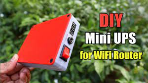

Projects

In my locality, frequent load shading is a very common problem during summer. I was really tired of this problem. I always wanted to have a mini UPS system that can power up my WiFi-Router/Modem for internet purposes and also charge my Smartphone. After some brainstorming and by using my past DIY experience, I have landed on this simple Mini UPS design. The best thing about this UPS is that it uses minimal components and it can easily fit inside my jeans pocket during traveling.
<